Primary bedroom
Start here when the group needs one clear main bedroom for adults, early sleepers, or guests who need a quieter setup.
Room planning
A room-planning guide for groups using Waterfall Wonder's 2 king beds, 4 standard queen beds, 1 queen-size sleeper sofa with a queen mattress, 3 bathrooms, and shared gathering spaces.
Room planning
The planning baseline is 2 king beds, 4 standard queen beds, 1 queen-size sleeper sofa with a queen mattress, and 3 bathrooms. The room labels below match the public site photo organization and help families, couples, and larger groups talk through the stay before arrival.
Sleeping spaces
The Cove sleeping area and Loft sleeping area are separate spaces. These photos help the group orient, then the booking page should guide bed placement and house rules before people are assigned.
Start here when the group needs one clear main bedroom for adults, early sleepers, or guests who need a quieter setup.
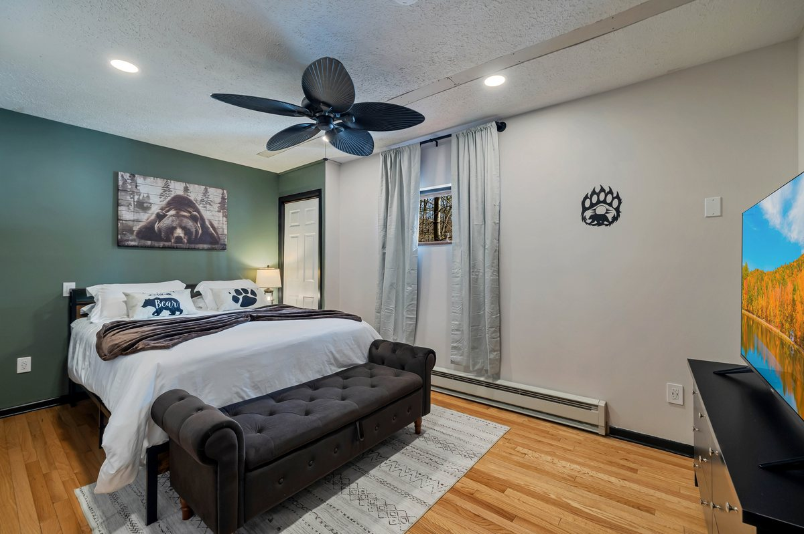
A standard bedroom option for assigning couples, kids, or guests who prefer a traditional room over a shared sleeping space.
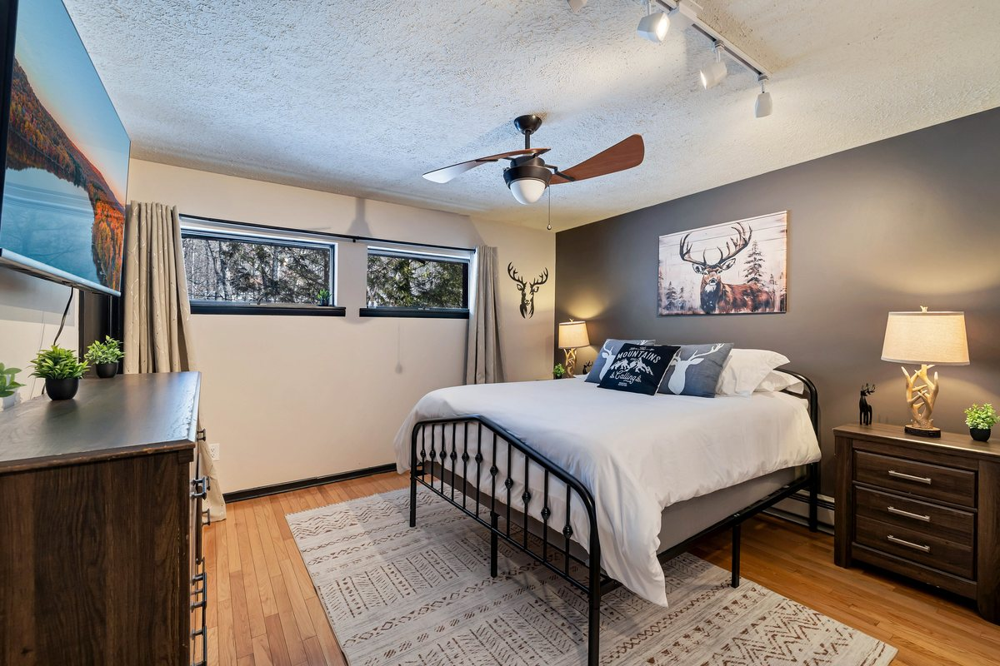
Another bedroom option for groups that need several separate room assignments before arrival.
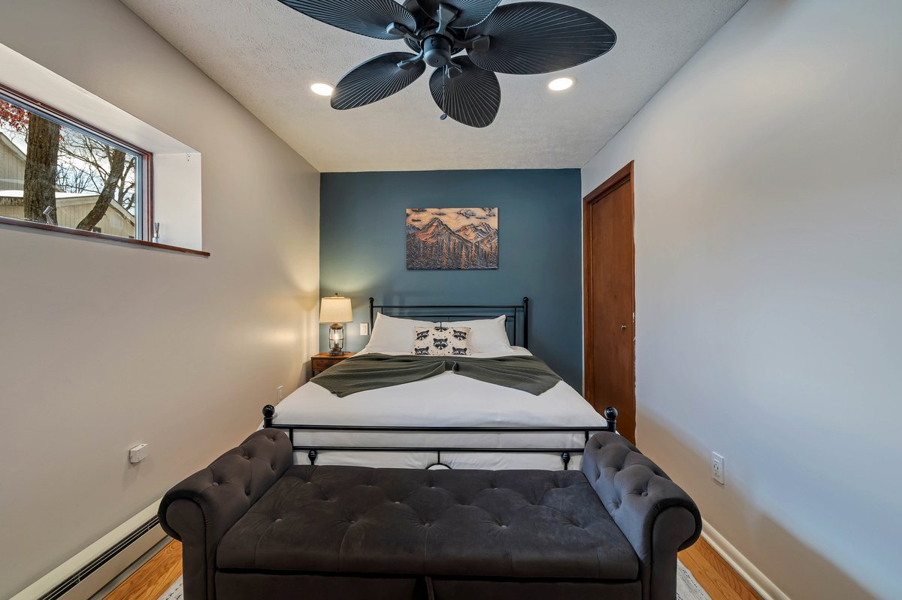
A separate bedroom preview that helps larger groups avoid sorting out room assignments at the front door.
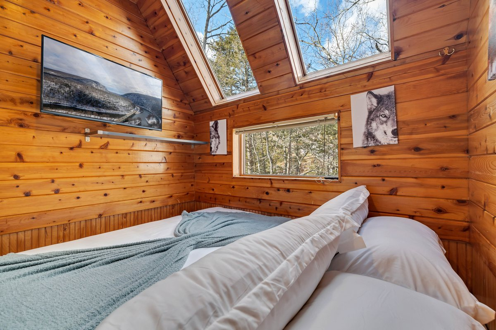
The Cove is its own sleeping-area label on this site. Do not treat it as the Loft when planning the group.
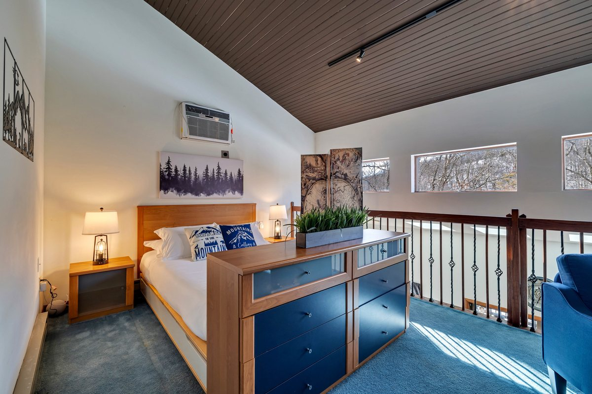
The Loft is a separate sleeping area and should be planned ahead, especially if some guests go to bed earlier than others.
Gathering spaces
For two-family trips and group weekends, the stay works better when everyone knows where meals, games, hot tub time, and quiet resets will happen.

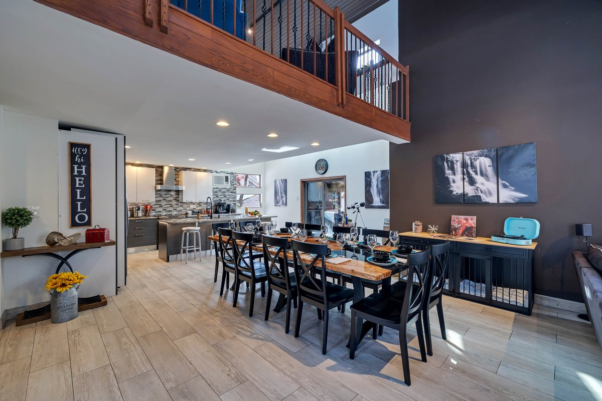
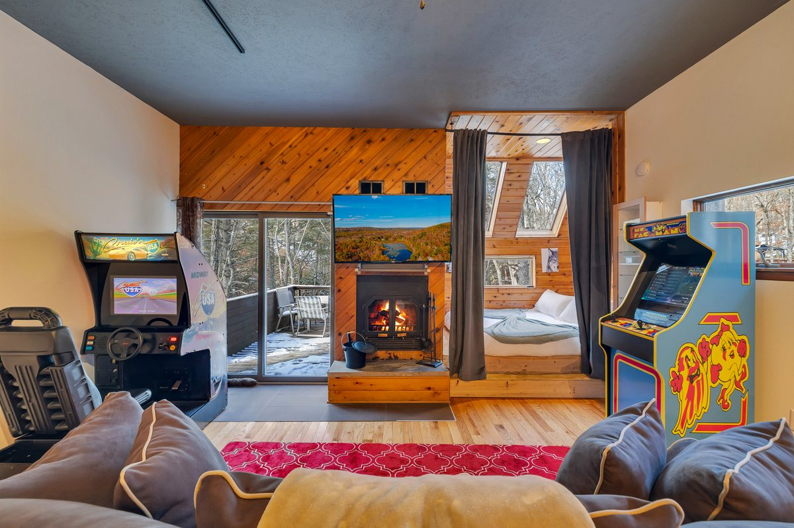


Group assignments
Assign the 2 king beds, 4 queen beds, and queen-size sleeper sofa before arrival so couples, kids, early sleepers, and late-night guests know the plan.
With 3 bathrooms, larger groups should decide which rooms share which bath before the first morning rush.
Coordinate vehicle count, arrival timing, winter road expectations, and parking guidance through the booking source.
Set expectations for decks, hot tub time, fire use, and waterfall-area caution before the group spreads out.
Bathrooms, parking, and outdoor zones
For groups, the useful planning questions are usually ordinary: who shares which bath, where the cars go, which deck is quiet, and where outdoor access needs extra caution.
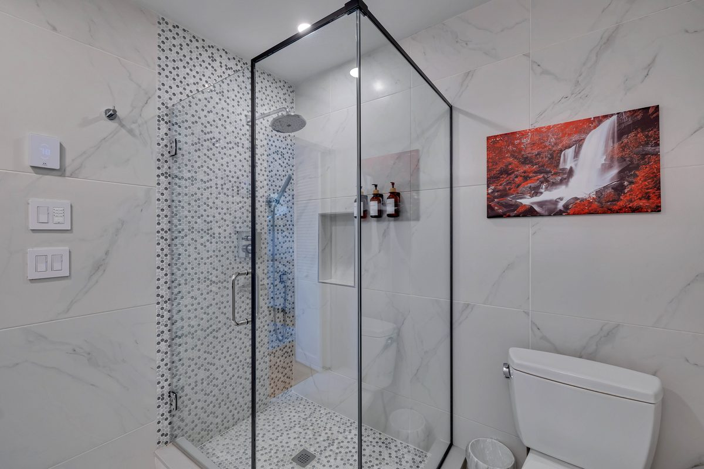
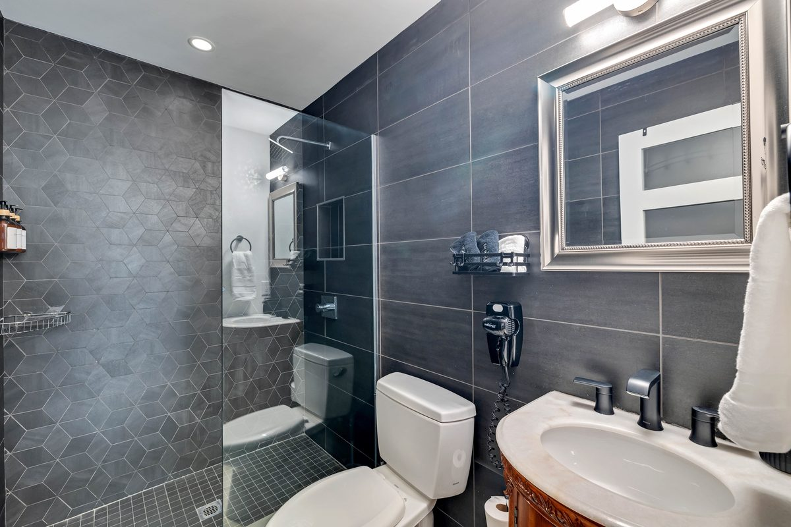
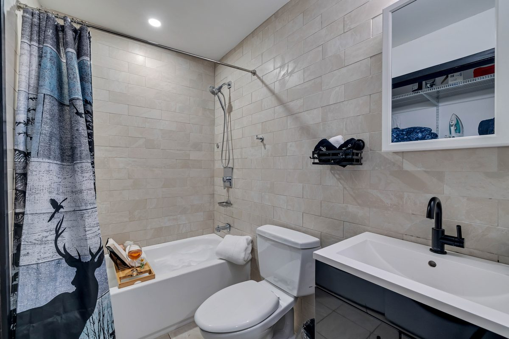
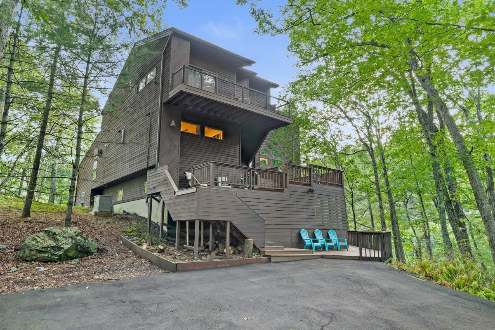
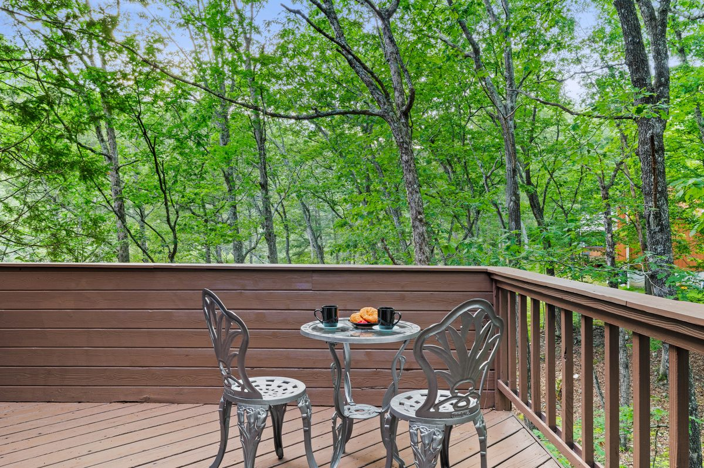
FAQ
The public planning baseline is up to 12 guests with 2 king beds, 4 standard queen beds, 1 queen-size sleeper sofa with a queen mattress, and 3 bathrooms. Review final placement and policies on WanderHome before reserving.
No. This site labels the Cove sleeping area and the Loft sleeping area separately.
Yes. Larger groups should assign beds, bathrooms, parking, dog plans, and quiet-hour expectations before arrival, then review final details with WanderHome.
Use WanderHome for the room layout, booking policies, parking guidance, Saw Creek registration, pet approvals, fees, and house rules.
Before you assign rooms
Start here for planning, then rely on WanderHome for the booking calendar, room layout, policies, pet approval details, Saw Creek registration guidance, and house rules.
Plan the stay
The smoother group trips start with beds, bathrooms, parking, pets, meals, and house rules before anyone loads the car.